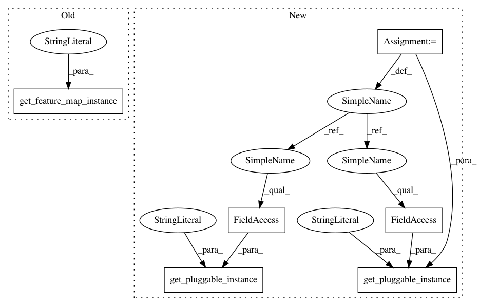

831be1dc40528bf85d45995a9ba0acaf25c0c1aa,test/test_qsvm_variational.py,TestQSVMVariational,test_qsvm_variational_directly,#TestQSVMVariational#,64
Before Change
optimizer.set_options(save_steps=1)
num_qubits = 2
feature_map = get_feature_map_instance("SecondOrderExpansion")
feature_map.init_args(num_qubits=num_qubits, depth=2)
var_form = get_variational_form_instance("RYRZ")
var_form.init_args(num_qubits=num_qubits, depth=3)
After Change
def test_qsvm_variational_directly(self):
np.random.seed(self.random_seed)
svm = get_pluggable_instance(PluggableType.ALGORITHM,"QSVM.Variational")
svm.random_seed = self.random_seed
svm.setup_quantum_backend(backend="qasm_simulator", shots=1024)
optimizer = get_pluggable_instance(PluggableType.OPTIMIZER,"SPSA")
optimizer.init_args(max_trials=10, c0=4.0, skip_calibration=True)
optimizer.set_options(save_steps=1)
num_qubits = 2
feature_map = get_pluggable_instance(PluggableType.FEATURE_MAP,"SecondOrderExpansion")
feature_map.init_args(num_qubits=num_qubits, depth=2)
var_form = get_pluggable_instance(PluggableType.VARIATIONAL_FORM,"RYRZ")
var_form.init_args(num_qubits=num_qubits, depth=3)
svm.init_args(self.training_data, self.testing_data, None, optimizer, feature_map, var_form)
result = svm.run()
In pattern: SUPERPATTERN
Frequency: 3
Non-data size: 6
Instances
Project Name: Qiskit/qiskit-aqua
Commit Name: 831be1dc40528bf85d45995a9ba0acaf25c0c1aa
Time: 2018-11-19
Author: manoel@us.ibm.com
File Name: test/test_qsvm_variational.py
Class Name: TestQSVMVariational
Method Name: test_qsvm_variational_directly
Project Name: Qiskit/qiskit-aqua
Commit Name: 831be1dc40528bf85d45995a9ba0acaf25c0c1aa
Time: 2018-11-19
Author: manoel@us.ibm.com
File Name: test/test_qsvm_kernel.py
Class Name: TestQSVMKernel
Method Name: test_qsvm_kernel_binary_directly
Project Name: Qiskit/qiskit-aqua
Commit Name: 831be1dc40528bf85d45995a9ba0acaf25c0c1aa
Time: 2018-11-19
Author: manoel@us.ibm.com
File Name: test/test_qsvm_variational.py
Class Name: TestQSVMVariational
Method Name: test_qsvm_variational_directly
Project Name: Qiskit/qiskit-aqua
Commit Name: 831be1dc40528bf85d45995a9ba0acaf25c0c1aa
Time: 2018-11-19
Author: manoel@us.ibm.com
File Name: test/test_qsvm_kernel.py
Class Name: TestQSVMKernel
Method Name: test_qsvm_kernel_binary_directly_statevector